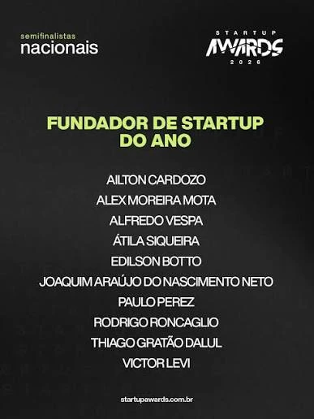
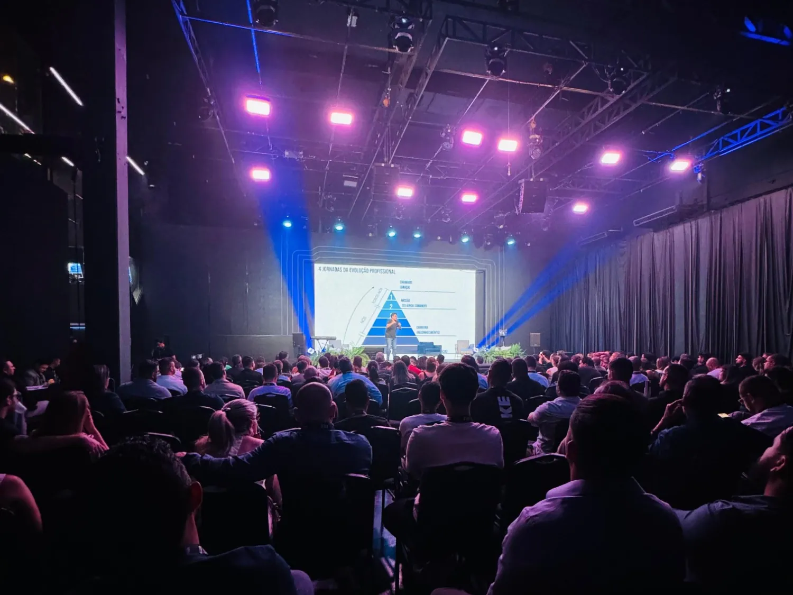
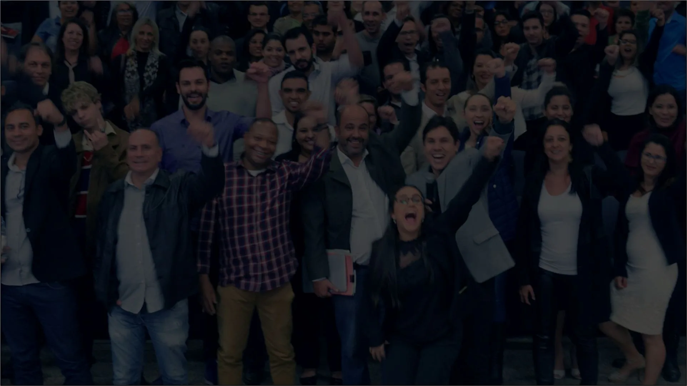

Desenvolvimento Humano · Negócios · Investimentos
Pessoas fortes constroem empresas imparáveis.
Há mais de 13 anos estruturando operações lucrativas, formando líderes de alta performance e escalando negócios no Brasil com método próprio e visão 360°.
Jornada de crescimento
Da sala de treinamento ao palco das grandes decisões.
Átila Siqueira é estrategista de negócios, advisor e especialista em gestão, vendas e liderança. Ajuda pessoas empreendedoras a estruturarem operações lucrativas, destravarem o potencial de suas equipes e escalarem resultados com método, performance e desenvolvimento humano.
Estratégia para escalar negócios.
Método para desenvolver pessoas.
- Consultoria & AdvisorDestaque
Lado a lado com o empresário: diagnóstico, estratégia e implementação, com foco em redução de custos, expansão comercial com venda ativa e decisões de crescimento acompanhadas de perto.
- Treinamentos
Mais de 4.000 horas de treinamentos entregues em todo o Brasil — formação e capacitação de líderes, planejamento estratégico e gestão comercial.
- Palestras
“Motivando para viver o Extraordinário”, premiada por 2 anos consecutivos pela Braslider como palestra revelação.
- Imersões
Business Experience e Imersão Empresarial: inteligência emocional e ferramentas de negócio em um só lugar.
empresas
treinamento
transformadas
aceleradas
Destaque
Semifinalista nacional no Startup Awards 2026
Entre os 10 semifinalistas do Brasil na categoria Fundador de Startup do Ano, no prêmio da Abstartups que reconhece os destaques do ecossistema de inovação. Reconhecimento que coroa uma trajetória construída em palcos, salas de treinamento e dentro das empresas.


Empresas e instituições que já confiaram no trabalho
Módulos em destaque
Três caminhos.
Um mesmo destino: evolução.
Nação Saúde
Toda vida importa. Consultas, exames, telemedicina Einstein 24h e descontos em medicamentos — saúde acessível para você, sua família e sua empresa, sem carência e sem multa contratual.
- até 80% de economia em consultas e exames
- 24h telemedicina Einstein
- +12 mil credenciados no Brasil
Frequência Empresarial
Sua empresa tem uma frequência. Vamos sintonizá-la. Mentoria em grupo ou individual com diagnóstico 360° da sua empresa — pessoas, processos, produto, marketing, vendas e finanças — para transformar ruído em crescimento.
- 360° diagnóstico de 8 áreas
- Grupo ou individual
- Método MBI aplicado ao seu negócio
Biohacking
Alta performance começa no corpo. Tecnologias japonesas Nipponflex de bem-estar — água alcalina, infravermelho longo (FIR) e produtos magnéticos para o sono, a recuperação e a energia do dia a dia.
- Sono e recuperação
- Água alcalina
- 12x e entrega em todo o Brasil
Metodologia e visão 360
Ninguém cresce por partes.
O MBI — Mentoring Business Intelligence é a evolução do coaching tradicional. Trabalha o lado racional e o emocional, refaz crenças limitantes e entrega estratégias corporativas com ferramentas práticas para desenvolver pessoas e expandir empresas.
- 01
Mente
Inteligência emocional, crenças e mentalidade de crescimento.
- 02
Corpo
Saúde, energia e performance como base para resultados.
- 03
Negócios
Gestão, vendas, liderança e planejamento estratégico.
- 04
Patrimônio
Visão de investimentos e construção de legado.
